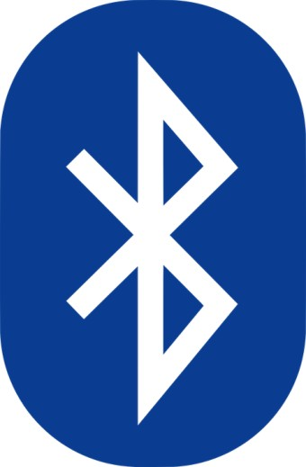
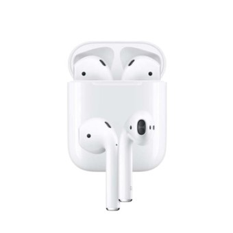
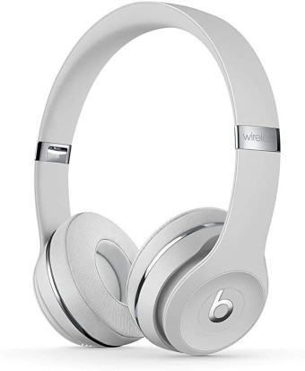

블루투스의 역사
1994년 에릭슨이 최초로 개발한 근거리에서 기기 간에 저전력으로 무선통신을 하기 위한
개인 근거리 무선 통신을 위한 산업 표준이다. 1999년 블루투스 버전 1.08이 발표된 이후
AFH를 적용한 버전인 1.2가 2003년에 채택되었고 이후로 지속적인 버전이 출시되면서
현재까지 이르게 되었다.
블루투스(Bluetooth)는 휴대폰, 노트북, 이어폰·헤드폰 등의 휴대기기를
서로 연결해 정보를 교환하는 근거리 무선 기술 표준을 뜻한다.
주로 10미터 안팎의 초단거리에서 저전력 무선 연결이 필요할 때 쓰인다.
1994년 에릭슨이 최초로 개발한 근거리에서 기기 간에 저전력으로 무선통신을 하기 위한
개인 근거리 무선 통신을 위한 산업 표준이다. 1999년 블루투스 버전 1.08이 발표된 이후
AFH를 적용한 버전인 1.2가 2003년에 채택되었고 이후로 지속적인 버전이 출시되면서
현재까지 이르게 되었다.
"선이 없는 이어폰"을 의미하며 무선 이어폰을 시작으로 "무선 헤드셋", "넥밴드 이어폰"등이 출시되며
다양한 형태의 무선 이어폰과 관련된 제품들이 출시되었다. 현재에는 "AirPods"의 출시와 대성공 이후로
주요 스마트폰 제조사들이 기존의 3.5MM잭을 없애고 여러 전자제품 제조사들이 다양한 무선 이어폰을 생산하기
시작하면서 무선 이어폰의 시장 자체가 급격히 커져 무선 이어폰의 시대가 되었다.
모바일 기기의 또 다른 보안 문제는 블루투스의 사용이다. 블루투스는 기본적으로 선을 사용하지 않고
휴대전화/휴대용 단말기/주변 장치 등을 연결하기 위한 기술이다. 즉 여러 가지 장치들이 작은 규격과
적은 전력으로 접근하기 때문에 높은 수준의 암호화와 인증을 구현하기가 어려워 다양한 위험에 노출될 수 있다.
블루투스와 관련된 다양한 해킹 기술들은 대부분은 네트워크 해킹과 비슷한 개념을 가지고 있다.
가장 주목받는 응용 중 하나는 비콘(Beacon)이다. 비콘은 원래 배가 기차의 위치를 확인하거나
특정 목적의 메시지를 전달하기 위해 주기적으로 신호를 보내는 장치를 가리킨다.
최초로 주목을 받기 시작한 것은 애플이 ‘아이비콘(iBeacon)’을 선보일 때이다.
일반용량의 수은전지 하나로 2년 이상 갈 수 있다는 저전력성, 1~2달러 수준의 저렴한 모듈 가격,
소형화 등이 주목받은 이유이다. 스마트 폰이나 테블릿 등은 이 비콘에서 주기적으로 오는 신호를 통해
특정 앱을 수행하거나 특정 웹 화면을 보여 줄 수 있다. 그 외에 스마트워치, 스마트 밴드 등에 활용되고 있다.
|  |  |  |